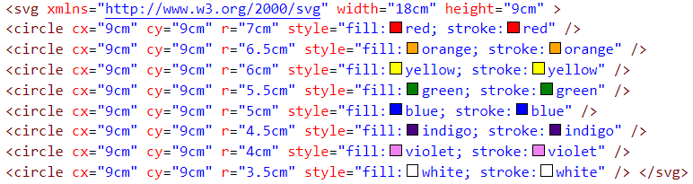
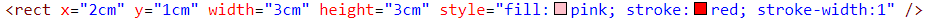
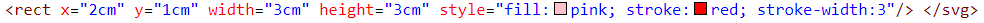
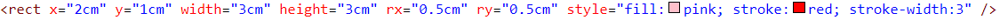
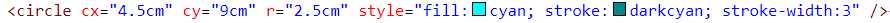
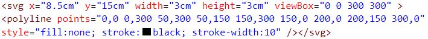

Oblici kreirani pomoću SVG taga:
Pomoću SVG taga moguće je kreirati razne oblike. Ovo su neki od njih:
Kreiranje duge pomoću SVG taga:

Kreiranje kvadrata pomoću SVG taga (tanke ivice)

Kreiranje kvadrata pomoću SVG taga (deblje ivice):

Kreiranje kvadrata pomoću SVG taga (zaobljene ivice):

Kreiranje kruga pomoću SVG taga:

Kreiranje elipse pomoću SVG taga:
Kreiranje linije pomoću SVG taga:
Kreiranje više linija pomoću SVG taga:

Kreiranje poligona pomoću SVG taga: